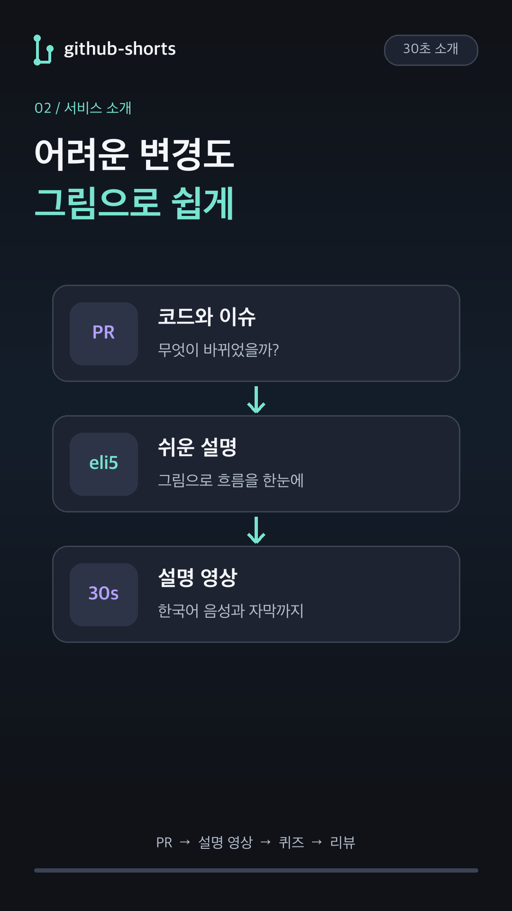
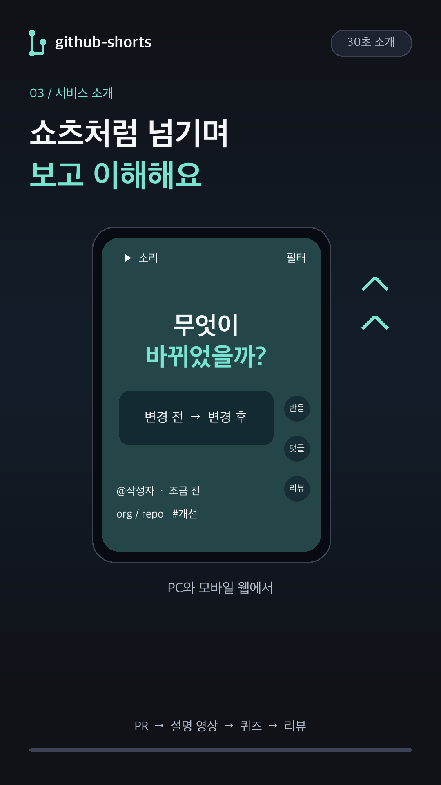
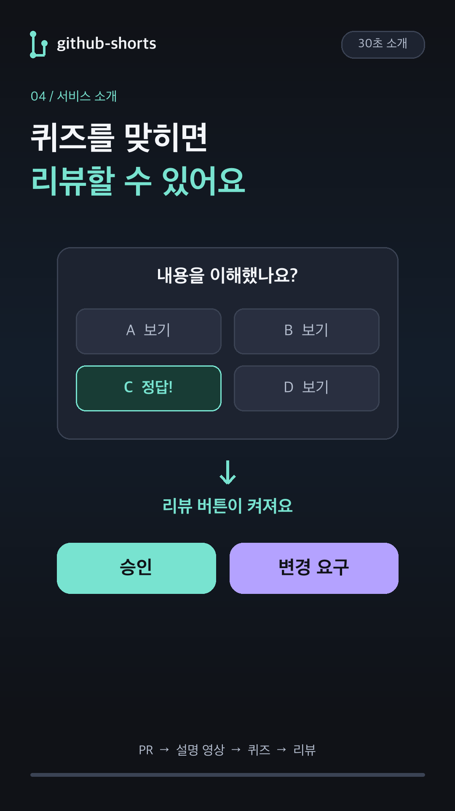

github-shorts · eli5 설명
고친 코드인 PR을 설명 영상으로 보고, 퀴즈를 맞힌 뒤 GitHub에 리뷰를 남기는 서비스예요.
한국어 음성·자막이 포함된 30초 샘플입니다. 마지막 7초에 확인 퀴즈가 나옵니다.
MP4 저장하기


영상 마지막에 나온 확인 퀴즈
정답은 C입니다. 현재 영상의 퀴즈에 정답을 맞히면 승인이나 변경 요구를 할 수 있어요. 틀리면 다시 골라요.
본인 PR에는 리뷰 버튼이 없어요. 영상이 만들어진 뒤 코드가 바뀌었다면, 새 영상이 게시될 때까지 서비스에서 리뷰를 제출할 수 없어요.
이 파일은 설명용 샘플이며 실제 GitHub 로그인·댓글·리뷰를 실행하지 않습니다. Codex에서 직접 제작했으며, Claude Code가 Codex CLI를 호출하는 통합 실행은 이번 샘플에서 검증하지 않았습니다.
eli5 원본 스킬의 큰 그림과 적은 글자로 설명하는 지침을 적용했습니다. 음성은 macOS의 Yuna로 로컬에서 합성했습니다.